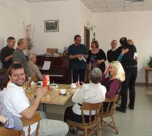

A tymczasem w Cameracie...
.
2012-05-03
3 maja -„Camerata” uczestniczy w porannej Mszy Świętej w intencji Ojczyzny w Kaplicy Centrum Salezjańskiego, zapewniając oprawę muzyczną. Schodzimy na wczesne śniadanie. Sto lat dla solenizantki Marioli i jubilata Konrada i w drogę. Świętować będziemy po kolacji, gdyż mamy bardzo napięty plan zwiedzania.Jedziemy do Carskiego Sioła. Wysiadamy z autokaru i tu zaskoczenie, bo Hymnem Polski wita nas tutejsza orkiestra. Co by na to powiedziała . . . Caryca? Idziemy zwiedzać.


Przebieramy się i jedziemy na koncert w Sali Koncertowej Administracji Pietrogrodzkiego Rejonu Sankt Petersburga, w przypadające Święto Konstytucji. Na miejscu krótka rozśpiewka i … koncert. Na obu koncertach obecny jest Piotr Marciniak, Konsul Generalny RP Koncert zakończony. Jest super, widać to po naszych minach. Wracamy do hotelu.

Czas szybko mija w tak wesołym gronie, ale dzisiaj jeszcze jedna atrakcja… rejs nocny po Newie.
(Sankt Petersburg położone jest w delcie rzeki Newy, nad Zatoką Fińską. W obszarze miasta znajduje się ponad 40 wysp. Wyspy połączone są 396 mostami, z których 14 największych jest co noc otwieranych w celu umożliwienia jednostkom pływającym przedostania się na jezioro Ładoga.)
I to właśnie będziemy oglądać w czasie rejsu, czyli nocny Petersburg i podnoszenie mostów. Spotykamy się o 23.30 i idziemy nad brzeg Newy, skąd zabierze nas stateczek. Zimno, więc wszyscy ciepło się ubierają.


© Stowarzyszenie Muzyczne Chór Camerata Wieliczka